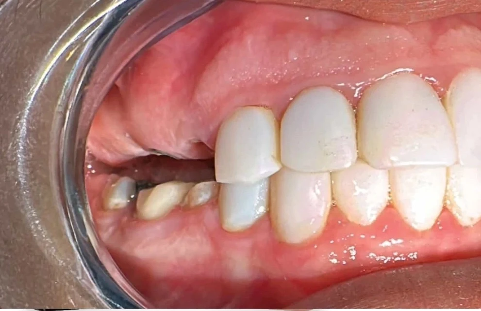

Insight 78 — کاهش فضای اینتراکلوزال در ناحیهی خلفی فک بالا: قبل از ایمپلنت چه باید کرد؟
تاریخ انتشار:
آخرین بازبینی:
English

توضیح بالینی
بیمار در ناحیهی دندانهای ۴ تا ۶ فک بالا کاندید درمان ایمپلنت است، اما فضای اینتراکلوزال در این ناحیه کم شده است. سوال این است که آیا میشود ایمپلنت گذاشت و با یک روکش پیچ شونده مشکل فضا را حل کرد، یا باید از دندانهای مقابل در فک پایین هم ریداکشن انجام شود؟
-
قدم اول: ارزیابی پلن اکلوزال
قبل از هر تصمیمی باید پلن اکلوزال بررسی شود. نکتهی تعیین کننده این است که دندانهای فک پایین نسبت به پلن در چه وضعیتی هستند. اگر دندانهای پایین در پلن قرار دارند، نباید به آنها دست زد. در این حالت کمبود فضا از سمت فک بالا ایجاد شده و راه حل هم باید از همان سمت باشد، نه با تراش دندانهای سالمی که سر جای درست خودشان هستند. -
قدم دوم: ایجاد فضا از سمت فک بالا
وقتی دندانهای پایین در پلن هستند، فضا در مرحلهی جراحی به دست میآید:- بعد از کشیدن دندانهای ناحیه، استخوان مرتب میشود و استئوپلاستی انجام میگیرد تا ارتفاع ریج کاهش پیدا کند.
- ایمپلنتها در موقعیت درست قرار داده میشوند و خیلی سطحی گذاشته نمیشوند. قرار دادن ایمپلنت حدود یک تا دو میلیمتر عمیقتر، فضای پروتزی بیشتری فراهم میکند.
-
قدم سوم: انتخاب نوع پروتز
اگر بعد از این اقدامات باز هم فضا کم بود، آن موقع سراغ پروتز پیچ شونده (اسکرو ریتیند) میرویم. یعنی پروتز پیچ شونده جایگزین اصلاح فضا نیست و گزینهای است برای وقتی که با وجود استئوپلاستی و عمق مناسب ایمپلنت، فضا همچنان محدود مانده است. -
جمعبندی
ترتیب تصمیمگیری در این بیمار به این شکل است: اول ارزیابی پلن اکلوزال، بعد حفظ دندانهای مقابل در صورتی که در پلن هستند، سپس ایجاد فضا با استئوپلاستی و قرار دادن عمیقتر ایمپلنت، و در نهایت انتخاب پروتز پیچ شونده در صورتی که فضا هنوز کافی نباشد.
محتوای این صفحه برای استفادهٔ آموزشی دندانپزشکان و دانشجویان دندانپزشکی تهیه شده است.